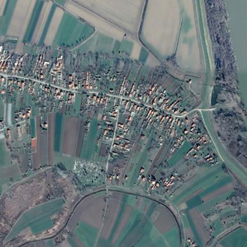
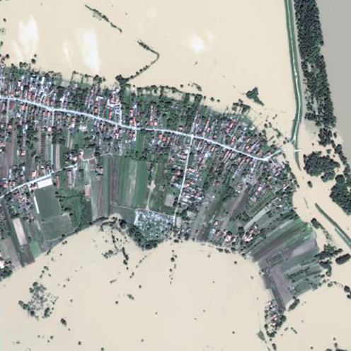

Geographies of Expertise
disaster recovery & prevention
Toggle nagviation
Menu
Ruth Trumble
About
Contact
Writing

Satellite image of Obrenovac, Serbia before the May 2014 flood - Time Magazine
In what ways do myriad forms of expertise come together during moments of crises and what are the effects of their interaction?
How do multiple crises occurring in rapid succession in one place shape deployment of expertise?
How do different actors produce expertise?
What voices are allowed in the process of expertise production?

Satellite image of Obrenovac, Serbia after the May 2014 flood - Time Magazine